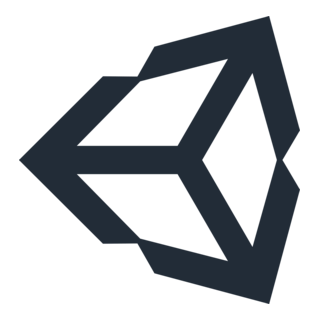

Unity
Uso Unity para el desarrollo de videojuegos y experiencias interactivas. Me especializo en prototipado, lógica básica y diseño de entornos 3D narrativos. Combino funcionalidad y narrativa para crear experiencias inmersivas.

Figma
Figma es mi herramienta principal para el diseño de interfaces, prototipos interactivos y flujos de usuario. Trabajo con metodologías centradas en el usuario, manteniendo siempre la claridad, simplicidad y coherencia visual.

Blender
Utilizo Blender para modelado 3D low poly, animaciones básicas y elementos visuales para videojuegos o interfaces. Me enfoco en crear assets estilizados y funcionales que complementen la experiencia interactiva.
Frontend
Sé desarrollar en frontend utilizando HTML, CSS y JavaScript. Esto me permite crear interfaces funcionales y responsivas, además de entender y ejecutar la implementación de mis propios diseños. Trabajo combinando lo visual con lo técnico para lograr una experiencia completa.